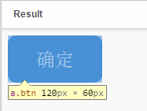
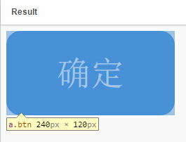
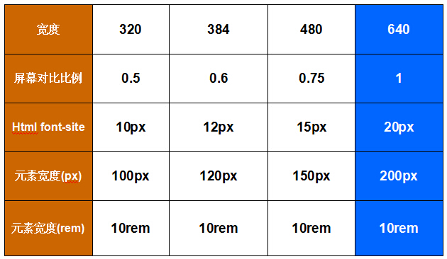
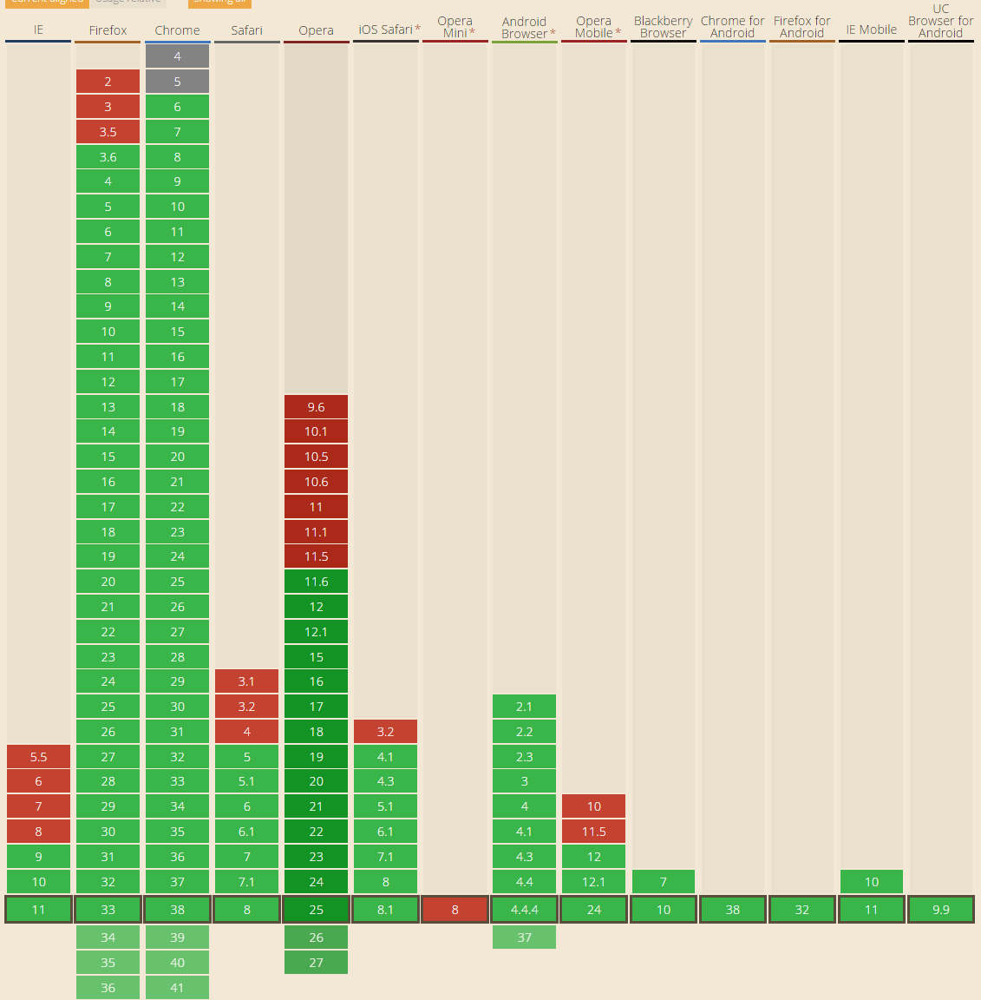

文章目录
摘要：rem是相对于根元素<html>，这样就意味着，我们只需要在根元素确定一个px字号，则可以来算出元素的宽高。本文讲的是如何使用rem实现自适应。
rem这是个低调的css单位，近一两年开始崭露头角，有许多同学对rem的评价不一，有的在尝试使用，有的在使用过程中遇到坑就弃用了。但是我对rem综合评价是用来做web app它绝对是最合适的人选之一。
rem是什么？
rem（font size of the root element）是指相对于根元素的字体大小的单位。简单的说它就是一个相对单位。看到rem大家一定会想起em单位，em（font size of the element）是指相对于父元素的字体大小的单位。它们之间其实很相似，只不过一个计算的规则是依赖根元素一个是依赖父元素计算。
为什么web app要使用rem？
这里我特别强调web app，web page就不能使用rem吗，其实也当然可以，不过出于兼容性的考虑在web app下使用更加能突显这个单位的价值和能力，接下来我们来看看目前一些企业的web app是怎么做屏幕适配的。
1、实现强大的屏幕适配布局：
最近iphone6一下出了两款尺寸的手机，导致的移动端的屏幕种类更加的混乱，记得一两年前做web app有一种做法是以320宽度为标准去做适配，超过320的大小还是以320的规格去展示，这种实现方式以淘宝web app为代表作，但是近期手机淘宝首页进行了改版，采用了rem这个单位，首页以内依旧是和以前一样各种混乱，有定死宽度的页面，也有那种流式布局的页面。
我们现在在切页面布局的使用常用的单位是px，这是一个绝对单位，web app的屏幕适配有很多中做法，例如：流式布局、限死宽度，还有就是通过响应式来做，但是这些方案都不是最佳的解决方法。
例如流式布局的解决方案有不少弊端，它虽然可以让各种屏幕都适配，但是显示的效果极其的不好，因为只有几个尺寸的手机能够完美的显示出视觉设计师和交互最想要的效果，但是目前行业里用流式布局切web app的公司还是挺多的，看看下面我收集的一些案例：
1.亚马逊：
2.携程：
3.兰亭
上面的网站都是采用的流式布局的技术实现的，他们在页面布局的时候都是通过百分比来定义宽度，但是高度大都是用px来固定住，所以在大屏幕的手机下显示效果会变成有些页面元素宽度被拉的很长，但是高度还是和原来一样，实际显示非常的不协调，这就是流式布局的最致命的缺点，往往只有几个尺寸的手机下看到的效果是令人满意的，其实很多视觉设计师应该无法接受这种效果，因为他们的设计图在大屏幕手机下看到的效果相当于是被横向拉长来一样。
流式布局并不是最理想的实现方式，通过大量的百分比布局，会经常出现许多兼容性的问题，还有就是对设计有很多的限制，因为他们在设计之初就需要考虑流式布局对元素造成的影响，只能设计横向拉伸的元素布局，设计的时候存在很多局限性。
2.固定宽度做法
还有一种是固定页面宽度的做法，早期有些网站把页面设置成320的宽度，超出部分留白，这样做视觉，前端都挺开心，视觉在也不用被流式布局限制自己的设计灵感了，前端也不用在搞坑爹的流式布局。但是这种解决方案也是存在一些问题，例如在大屏幕手机下两边是留白的，还有一个就是大屏幕手机下看起来页面会特别小，操作的按钮也很小，手机淘宝首页起初是这么做的，但近期改版了，采用了rem。
3.响应式做法
响应式这种方式在国内很少有大型企业的复杂性的网站在移动端用这种方法去做，主要原因是工作大，维护性难，所以一般都是中小型的门户或者博客类站点会采用响应式的方法从web page到web app直接一步到位，因为这样反而可以节约成本，不用再专门为自己的网站做一个web app的版本。
4.设置viewport进行缩放
天猫的web app的首页就是采用这种方式去做的，以320宽度为基准，进行缩放，最大缩放为320*1.3 = 416，基本缩放到416都就可以兼容iphone6 plus的屏幕了，这个方法简单粗暴，又高效。说实话我觉得他和用接下去我们要讲的rem都非常高效，不过有部分同学使用过程中反应缩放会导致有些页面元素会糊的情况。
<meta name="viewport" content="width=320,maximum-scale=1.3,user-scalable=no">
rem能等比例适配所有屏幕
上面讲了一大堆目前大部分公司主流的一些web app的适配解决方案，接下来讲下rem是如何工作的。
上面说过rem是通过根元素进行适配的，网页中的根元素指的是html我们通过设置html的字体大小就可以控制rem的大小。举个例子：
html{
font-size:20px;
}
.btn {
width: 6rem;
height: 3rem;
line-height: 3rem;
font-size: 1.2rem;
display: inline-block;
background: #06c;
color: #fff;
border-radius: .5rem;
text-decoration: none;
text-align: center;
}Demo 上面代码结果按钮大小如下图：

我把html设置成10px是为了方便我们计算，为什么6rem等于60px。如果这个时候我们的.btn的样式不变，我们再改变html的font-size的值，看看按钮发生上面变化:
html{
font-size:40px;
}Demo
按钮大小结果如下：

上面的width，height变成了上面结果的两倍，我们只改变了html的font-size，但.btn样式的width,height的rem设置的属性不变的情况下就改变了按钮在web中的大小。
其实从上面两个案例中我们就可以计算出1px多少rem:
第一个例子：
120px = 6rem * 20px(根元素设置大值)
第二个例子：
240px = 6rem * 40px(根元素设置大值)
推算出：
10px = 1rem 在根元素（font-size = 10px的时候）；
20px = 1rem 在根元素（font-size = 20px的时候）；
40px = 1rem 在根元素（font-size = 40px的时候）；
在上面两个例子中我们发现第一个案例按钮是等比例放大到第二个按钮，html font-size的改变就会导致按钮的大小发生改变，我们并不需要改变先前给按钮设置的宽度和高度，其实这就是我们最想看到的，为什么这么说？接下来我们再来看一个例子：
Demo
由上面两个的demo中我们知道改变html的font-size可以等比改变所有用了rem单位的元素，所以大家可以通过chrome浏览器的调试工具去切换第三个的demo在不同设备下的展示效果，或者通过缩放浏览器的宽度来查看效果，我们可以看到不管在任何分辨率下，页面的排版都是按照等比例进行切换，并且布局没有乱。我只是通过一段js根据浏览器当前的分辨率改变font-size的值，就简单的实现了上面的效果，页面的所有元素都不需要进行任何改变。
到这里肯定有很多人会问我是怎么计算出不同分辨率下font-size的值？
首先假设我上面的页面设计稿给我时候是按照640的标准尺寸给我的前提下，（当然这个尺寸肯定不一定是640，可以是320，或者480，又或是375）来看一组表格。

上面的表格蓝色一列是Demo3中页面的尺寸，页面是以640的宽度去切的，怎么计算不同宽度下font-site的值，大家看表格上面的数值变化应该能明白。举个例子：384/640 = 0.6，384是640的0.6倍，所以384页面宽度下的font-size也等于它的0.6倍，这时384的font-size就等于12px。在不同设备的宽度计算方式以此类推。
Demo3中我是通过JS去动态计算根元素的font-size，这样的好处是所有设备分辨率都能兼容适配，淘宝首页目前就是用的JS计算。但其实不用JS我们也可以做适配，一般我们在做web app都会先统计自己网站有哪些主流的屏幕设备，然后去针对那些设备去做media query设置也可以实现适配，例如下面这样：
html {
font-size : 20px;
}
@media only screen and (min-width: 401px){
html {
font-size: 25px !important;
}
}
@media only screen and (min-width: 428px){
html {
font-size: 26.75px !important;
}
}
@media only screen and (min-width: 481px){
html {
font-size: 30px !important;
}
}
@media only screen and (min-width: 569px){
html {
font-size: 35px !important;
}
}
@media only screen and (min-width: 641px){
html {
font-size: 40px !important;
}
}上面的做的设置当然是不能所有设备全适配，但是用JS是可以实现全适配。具体用哪个就要根据自己的实际工作场景去定了。
下面推荐两个国内用了rem技术的移动站，大家可以上去参考看看他们的做法，手机淘宝目前只有首页用了rem，淘宝native app的首页是内嵌的web app首页。
淘宝首页：m.taobao.com
D X：m.dx.com
最后我们再来看一看他的兼容性：

在线工具
@blinkcat，rem是可以合并雪碧图的，viewport设置确实简洁，但是过于粗暴，全局都进行缩放，有时候我布局并不希望全局缩放，部分布局希望不用缩放，所以使用rem，不过具体使用什么方法大家都可以根据实际情况衡量。并不是每个人都喜欢使用sass，所以在px转rem这块我做了一个在线转换工具：http://520ued.com/tools/rem
REM自适应JS
具体使用方法请参考这篇文章：Rem精简版实现自适应-优化flexible.js
//designWidth:设计稿的实际宽度值，需要根据实际设置
//maxWidth:制作稿的最大宽度值，需要根据实际设置
//这段js的最后面有两个参数记得要设置，一个为设计稿实际宽度，一个为制作稿最大宽度，例如设计稿为750，最大宽度为750，则为(750,750)
;(function(designWidth, maxWidth) {
var doc = document,
win = window,
docEl = doc.documentElement,
remStyle = document.createElement("style"),
tid;
function refreshRem() {
var width = docEl.getBoundingClientRect().width;
maxWidth = maxWidth || 540;
width>maxWidth && (width=maxWidth);
var rem = width * 100 / designWidth;
remStyle.innerHTML = 'html{font-size:' + rem + 'px;}';
}
if (docEl.firstElementChild) {
docEl.firstElementChild.appendChild(remStyle);
} else {
var wrap = doc.createElement("div");
wrap.appendChild(remStyle);
doc.write(wrap.innerHTML);
wrap = null;
}
//要等 wiewport 设置好后才能执行 refreshRem，不然 refreshRem 会执行2次；
refreshRem();
win.addEventListener("resize", function() {
clearTimeout(tid); //防止执行两次
tid = setTimeout(refreshRem, 300);
}, false);
win.addEventListener("pageshow", function(e) {
if (e.persisted) { // 浏览器后退的时候重新计算
clearTimeout(tid);
tid = setTimeout(refreshRem, 300);
}
}, false);
if (doc.readyState === "complete") {
doc.body.style.fontSize = "16px";
} else {
doc.addEventListener("DOMContentLoaded", function(e) {
doc.body.style.fontSize = "16px";
}, false);
}
})(750, 750);部分文章参考：web app变革之rem